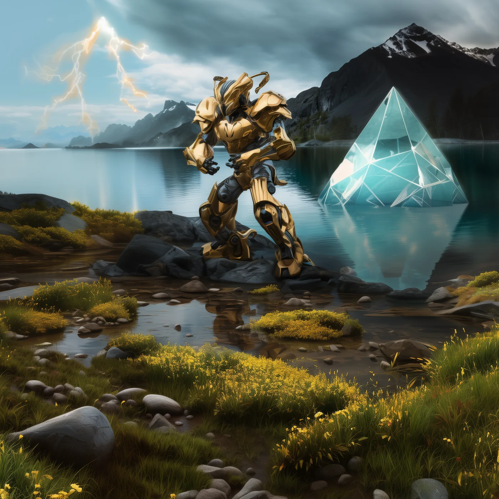

©
©

Uxanor
Eternal Custodian · Recruit
Uxanor moves through folded space as easily as stepping between rooms. The Rift Skip pierces the center and hits the flanks in the same instant. The Custodians send Uxanor first, to see what waits on the other side of every door.